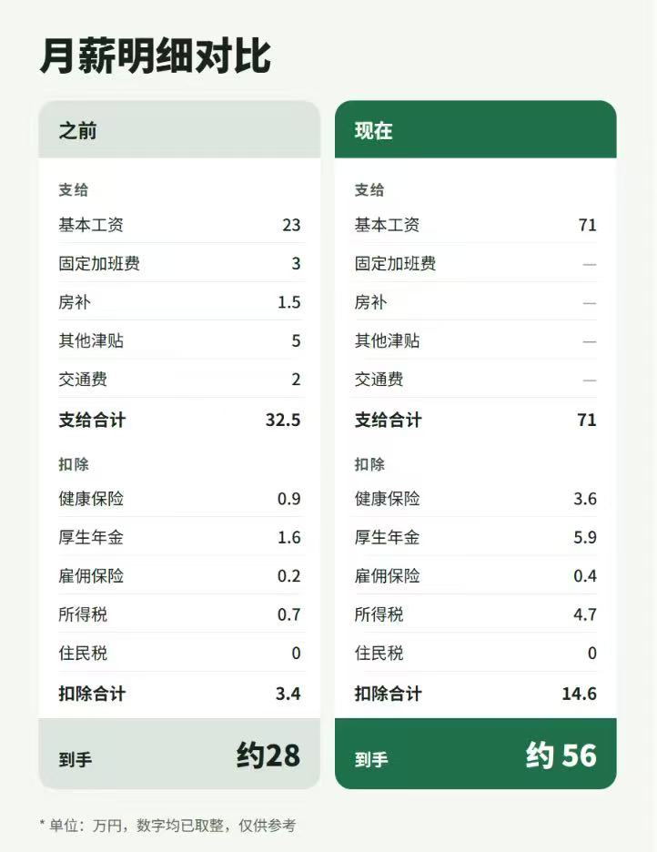

上期视频讲完日本 IT 的薪资天花板，评论区炸了。
一大堆网友纷纷给我晒他们的升职涨薪经历，有的甚至把工资单都发给我了。
这期我挑了两个最有代表性的，给大家讲一下。顺便聊一个问题：在 AI 时代，他们这种晋升通道，还能持续吗？
这位应该是疫情之后到日本语校，大概读了一年，拿了 N1 之后，就到日本的华人会社去做派遣。
英语非常好，日语是零基础，到日本来纯学的。做了三年左右派遣，最近上一个月的收入是这样的：
也就是说，从零开始干到现在三年，总体收入达到了 30 多万。基本上也符合预期。我们之前那期天花板里也说了，你在派遣行业里工作三年左右，大概的收入就是三四十万的样子。对，这个基本上符合预期，最后到手的实际的钱是 28 万左右。
他在日本 IT 派遣工作三年之后，最近跳到了一家日本的外资。这家需要英语和日语，英语是他的强项，加上日语，这两项 OK 之后，又积累了一定的相关业务经验。他在三年派遣中，后来被别人招去做业务咨询，是云服务方面。
目前拿到的薪资是 71 万日元。

71 万日元如果乘以 12 的话，就是 800 多万日元了，一下子突破了我们之前说的六七百万的薪资天花板。最后的收入大概是 56 万。
注意，这 56 万里面是没有包含住民税的。因为他是第一个月入职，相关的住民税还没转过来，后续就会从工资里扣了。那个时候可能就会扣掉几万的住民税，但肯定还是超过 50 万。
这条路更详细的拆解，我在另一篇里写过，这里不重复了。
第二个，我们就看一个 IT 老油条，他是如何拿到年入超过 1000 万的。
他在日本 IT 会社工作了五六年左右，在会社的薪资大概是 50 万日元左右。这个时候他的日语就非常 OK 了，技术呢也 OK 了，他就去接私活。
因为他的工作大部分都是在宅的，他就可以去接副业。那么他最多的时候接到 4 个副业，就是同时干 4 份工，加上他本职的 50 万收入，最高峰他能做到 1200 万的年收。而且是在他工作大概五六年的时候。
那么我们首先要分析的第一个问题就是：在 AI 时代，是不是能够长期存在，后来人还能不能继续做？
他是一个文科生，语言非常好，最后走的是技术加咨询的这么一条路。也就是说，最终是面对客户的，这种对语言的要求是相对非常高的。
同时，他去的是整个日本 IT 中处于上层位置的企业外资，所以他的薪资会相对高。而且呢，在 AI 时代，去聊客户这件事，是没办法替代的。所以他的这条路径，对后来的文科生非常有帮助。
但是有一点要提醒大家：他在前进的过程中，并不是那样随波逐流地这样去做，他是非常有目的性的。他自学了理科生的专业课程，高等代数、数据结构等等，完了之后去做云服务相关的方向。
所以我觉得，在后续 AI 时代的情况下，像他这种路径，特别是对语言比较好的新人来说，这条路径我觉得是非常具有参考意义的。当然，你也得付出一定相应的努力。
他的这种情况，在 AI 时代，至少在现在这个窗口期，是会越来越多的。为什么会越来越多？因为大量的客户实际上是需要这种技术好、语言也好的人，来去做上流的设计工作的。正是因为目前市场对这方面的需求非常短缺，所以他可以一个人去接几个人的活。
而随着 AI 大家的使用越来越深入，那么低端的程序员会慢慢地被淘汰，而高端的需求，这种资深技术者的岗位会越来越多。所以在这种情况下，对于他这类人来说，他的需求是在上升的，至少在目前这个窗口期。